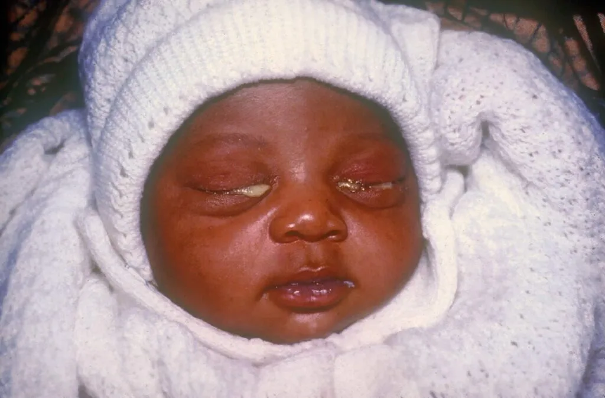
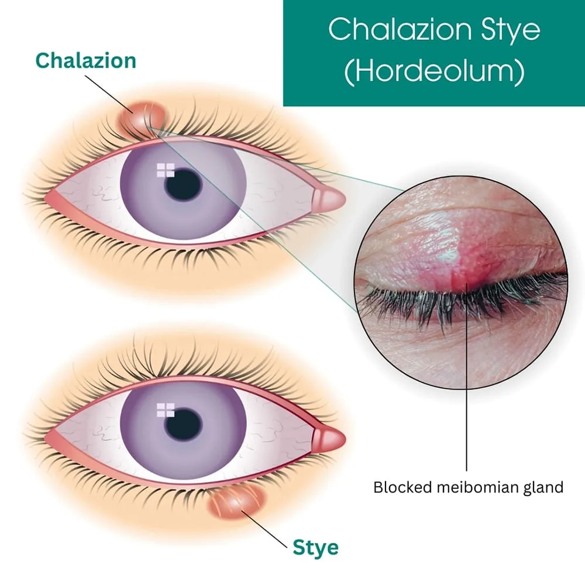
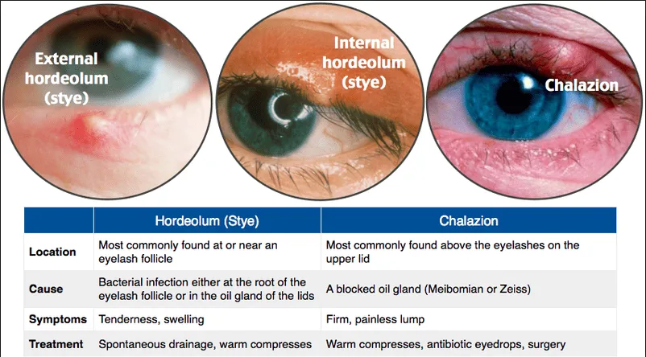
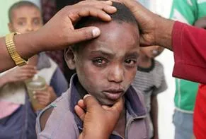
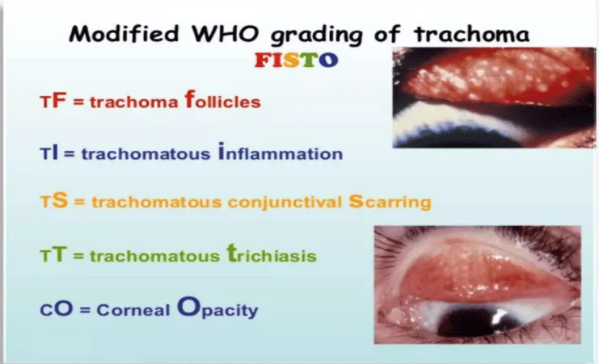
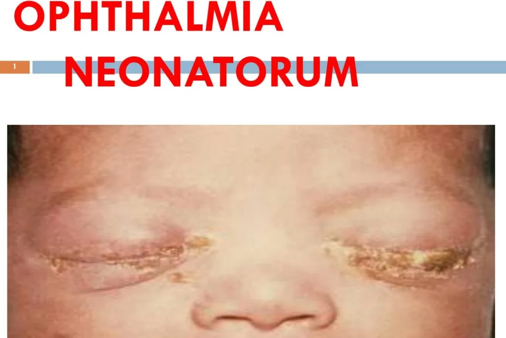
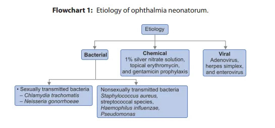
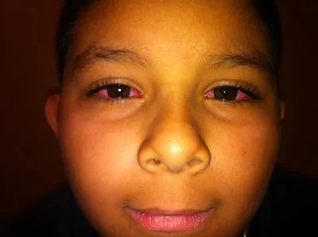

Expanded Nursing Uganda Explanation
Opportunistic Infections in Children links cause, transmission, prevention, assessment and treatment support. Good nursing notes should include infection prevention, danger signs, adherence support and community health education.
01 Overview
The clinical manifestations of HIV/AIDS in children are many, more aggressive, and progress more rapidly than in adults, particularly if infection occurs early in life (e.g., via MTCT) and without timely treatment. The presentation can range from non-specific symptoms to severe opportunistic infections and organ damage.
- Rapid Progression: Infants infected perinatally often experience rapid disease progression, with symptoms appearing within the first year of life. About 20-30% of perinatally infected infants develop severe disease and AIDS within the first year if untreated.
- Age-Dependent Presentation: Infants (0-1 year): Often present with failure to thrive, recurrent bacterial infections, persistent oral candidiasis, hepatosplenomegaly, and lymphadenopathy.
- Young Children (1-5 years): May show developmental delay, recurrent severe infections, chronic diarrhea, and increasing frequency of opportunistic infections.
- Older Children/Adolescents (>5 years): Clinical presentation begins to resemble adult HIV, with opportunistic infections, malignancies, and constitutional symptoms.
- Impact of ART: With the widespread availability and early initiation of Antiretroviral Therapy (ART), many of the classic severe manifestations are now less common, and children on ART can lead healthier, near-normal lives. However, untreated or poorly managed cases still present with severe disease.
- Infections: Bacterial: Unusually frequent and severe occurrences of common childhood bacterial infections, such as otitis media, sinusitis, and pneumonia. These often recur despite appropriate treatment.
- Fungal: Recurrent fungal infections, such as candidiasis (thrush), that do not respond well to standard antifungal agents, suggesting lymphocytic dysfunction.
- Viral: Recurrent or unusually severe viral infections, such as recurrent or disseminated herpes simplex or zoster infection, or cytomegalovirus (CMV) retinitis. These are seen with moderate to severe cellular immune deficiency.
- Growth and Development: Growth failure.
- Failure to thrive.
- Wasting.
- Failure to attain typical milestones: Such developmental delays, particularly impairment in the development of expressive language, may indicate HIV encephalopathy.
- Neurocognitive/Behavioral: Behavioral abnormalities (in older children), such as loss of concentration and memory, may also indicate HIV encephalopathy.
- Oral and Mucocutaneous Manifestations: Candidiasis: Most common oral and mucocutaneous presentation of HIV infection. Thrush in the oral cavity and posterior pharynx is observed in approximately 30% of HIV-infected children.
- Linear gingival erythema and median rhomboid glossitis.
- Parotid enlargement (often bilateral and painless) and recurrent aphthous ulcers.
- Herpes Simplex Virus (HSV) Manifestations: May manifest as herpes labialis, gingivostomatitis, esophagitis, or chronic erosive, vesicular, and vegetating skin lesions; the involved areas of the lips, mouth, tongue, and esophagus are ulcerated.
- Dermatological Manifestations: HIV dermatitis: An erythematous, papular rash; observed in about 25% of children with HIV infection.
- Dermatophytosis: Manifesting as an aggressive tinea capitis, corporis, versicolor, or onychomycosis.
- Generalized persistent dermatitis (unresponsive to treatment).
- Herpes zoster (shingles), which can be multi-dermatomal or single-dermatome.
- Respiratory System: Pneumocystis jiroveci (formerly P. carinii ) pneumonia (PCP): Most commonly manifests as cough, dyspnea, tachypnea, and fever.
- Digital clubbing: As a result of chronic lung disease.
- Lymphoid Interstitial Pneumonitis (LIP).
- Severe pneumonia.
- Bronchiectasis.
- Lymphatic and Organ Enlargement: Generalized cervical, axillary, or inguinal lymphadenopathy (often persistent and non-inguinal).
- Hepatosplenomegaly (especially in non-malaria endemic areas).
- Gastrointestinal: Persistent or recurrent diarrhea.
- Other Physical Signs: Lipodystrophy: Presentations include peripheral lipoatrophy, truncal lip hypertrophy, and combined versions of these presentations; a more severe presentation occurs at puberty.
- Pitting or non-pitting edema in the extremities.
- Persistent and recurrent fever.
- Neurologic dysfunction.
- Signs/conditions very specific to HIV infection (AIDS-defining illnesses in children): Pneumocystis pneumonia (PCP)
- Esophageal candidiasis
- Extrapulmonary cryptococcosis
- Invasive salmonella infection (recurrent non-typhoidal)
- Lymphoid interstitial pneumonitis (LIP)
- Herpes zoster (shingles) with multi-dermatomal involvement
- Kaposi’s sarcoma
- Lymphoma (e.g., non-Hodgkin lymphoma)
- Progressive multifocal encephalopathy
- Signs/conditions common in HIV-infected children and uncommon in uninfected children: Severe bacterial infections, particularly if recurrent.
- Persistent or recurrent oral thrush.
- Bilateral painless parotid enlargement.
- Generalized persistent non-inguinal lymphadenopathy.
- Hepatosplenomegaly (in non-malaria endemic areas).
- Persistent and recurrent fever.
- Neurologic dysfunction.
- Herpes zoster, single dermatome.
- Persistent generalized dermatitis (unresponsive to treatment).
- Conditions common in HIV-infected children but also common in ill uninfected children (less specific but still important): Chronic recurrent otitis with ear discharge.
- Persistent or recurrent diarrhea.
- Severe pneumonia.
- Tuberculosis.
- Bronchiectasis.
- Failure to thrive.
Opportunistic infections are infections caused by pathogens (bacteria, viruses, fungi, parasites) that usually do not cause disease in a healthy host with an intact immune system but seize the "opportunity" to infect and cause severe disease in individuals whose immune systems are compromised, such as those with HIV.
In children with HIV, OIs are a major cause of morbidity and mortality, especially in those who are undiagnosed, untreated, or have advanced immune suppression.
- Bacterial Infections: Recurrent Bacterial Pneumonia: Caused by common bacteria like Streptococcus pneumoniae, Haemophilus influenzae , and Staphylococcus aureus . These are often more severe, recurrent, and respond poorly to standard treatment in HIV-infected children.
- Bacteremia/Sepsis: Systemic bacterial infections are a significant concern.
- Non-typhoidal Salmonellosis: Can cause recurrent and severe infections, including bacteremia.
- Tuberculosis (TB): Mycobacterium tuberculosis is a major co-infection and opportunistic pathogen, particularly in endemic areas. It can present in various forms, including pulmonary TB, lymph node TB, and disseminated TB.
- Fungal Infections: Oral Candidiasis (Thrush) / Esophageal Candidiasis: Candida albicans is one of the most common OIs. Oral thrush is often an early sign in infants. If it extends to the esophagus (esophageal candidiasis), it's an AIDS-defining illness.
- Pneumocystis Pneumonia (PCP): Caused by Pneumocystis jirovecii . This is a particularly severe and common OI in young, HIV-infected infants (often presenting between 3-6 months of age) and is a leading cause of death in untreated infants. It's an AIDS-defining illness.
- Cryptococcosis: Caused by Cryptococcus neoformans , often manifesting as meningitis or disseminated disease, though less common in children than adults.
- Viral Infections: Cytomegalovirus (CMV) Disease: Can cause retinitis (leading to blindness), pneumonitis, colitis, and neurological disease.
- Herpes Simplex Virus (HSV) Infections: Can cause severe, persistent, or disseminated mucocutaneous lesions (e.g., severe oral ulcers, esophagitis, perianal ulcers).
- Varicella-Zoster Virus (VZV) Infections: Reactivation causes Herpes Zoster (shingles), which can be severe, recurrent, or multi-dermatomal. Primary chickenpox can also be unusually severe.
- Progressive Multifocal Leukoencephalopathy (PML): Caused by the JC virus, a rare but devastating neurological condition, typically seen in older children with profound immune suppression.
- Parasitic Infections: Cryptosporidiosis: Causes chronic, severe, watery diarrhea, leading to malabsorption and wasting.
- Isosporiasis: Similar to cryptosporidiosis, causing chronic diarrhea.
- Toxoplasmosis: Toxoplasma gondii can cause encephalitis (brain infection) or disseminated disease.
The fundamental cause of opportunistic infections in HIV/AIDS children (and adults) is the progressive immune suppression resulting from HIV's attack on the immune system, primarily the CD4+ T-lymphocytes . When the CD4+ T-cell count falls below critical levels, the body's ability to mount an effective defense against various pathogens is severely compromised.
- CD4+ T-lymphocyte Depletion and Dysfunction: Loss of Helper T-cells: CD4+ T-cells are central to coordinating both humoral (antibody-mediated) and cellular (cell-mediated) immune responses. Their destruction by HIV directly weakens the immune system's command center.
- Impaired Cell-Mediated Immunity (CMI): Many opportunistic pathogens (e.g., Pneumocystis jirovecii, Mycobacterium tuberculosis, Toxoplasma gondii , viruses like CMV and HSV) are typically controlled by CMI. With dwindling CD4+ cells, the immune system cannot effectively contain or eradicate these intracellular pathogens, leading to their uncontrolled replication and disease.
- Impaired B-cell Function (despite normal or elevated numbers): While B-cell numbers may be normal or even high, their ability to produce specific, high-affinity antibodies in response to new infections or vaccinations can be impaired due to a lack of proper T-cell help. This contributes to the susceptibility to recurrent bacterial infections.
- Chronic Immune Activation and Exhaustion: The persistent presence of HIV and other co-infections leads to chronic immune activation. While initially an attempt to fight the virus, this prolonged activation can eventually lead to immune exhaustion , where immune cells become dysfunctional and unable to respond effectively to new threats. Chronic inflammation also contributes to tissue damage and systemic decline.
- Compromised Mucosal Barriers: HIV infection can directly or indirectly damage the integrity of mucosal barriers (e.g., in the gut). This can lead to bacterial translocation from the gut lumen into the bloodstream, increasing the risk of systemic bacterial infections and sepsis. Chronic diarrhea and malabsorption further weaken the child, making them more susceptible.
- Co-infections and Microbial Translocation: The presence of other infections (e.g., other viruses, bacteria) can further tax the already weakened immune system. Changes in the gut microbiome can also play a role, promoting the growth of opportunistic bacteria.
- Age-Related Immune Development (in infants): Infants naturally have an immature immune system, especially in the first few months of life. If infected with HIV at birth, they face a double burden: an underdeveloped immune system trying to fight a devastating virus that actively destroys its key components. This is why OIs like PCP are particularly devastating in very young HIV-infected infants.
- Malnutrition: HIV infection itself can cause malnutrition through increased metabolic demands, malabsorption, and reduced appetite. Malnutrition, in turn, further compromises immune function, creating a vicious cycle that enhances susceptibility to OIs.
- Environmental and Exposure Factors: While the underlying cause is immune suppression, exposure to opportunistic pathogens (e.g., TB in an endemic area, contaminated water causing Cryptosporidiosis) is necessary for infection to occur. Poor hygiene, crowded living conditions, and lack of access to clean water can increase exposure risks.
Preventing opportunistic infections (OIs) is a cornerstone of managing HIV in children, improving their quality of life and survival.
- Antiretroviral Therapy (ART): The Most Crucial Intervention: Immune Reconstitution: The primary and most effective way to prevent OIs is by initiating and maintaining effective ART. ART suppresses HIV replication, leading to an increase in CD4+ T-cell counts and a restoration of immune function. As the immune system recovers, the risk of OIs dramatically decreases.
- Early Initiation: Starting ART as early as possible, ideally shortly after birth for HIV-exposed infants with confirmed infection, is critical. This helps preserve immune function before significant damage occurs and before OIs can take hold.
- Prophylaxis (Preventive Medications): Cotrimoxazole (Trimethoprim-Sulfamethoxazole, TMP-SMX) Prophylaxis: This is one of the most important and widely used prophylactic medications in HIV-infected children. Purpose: Primarily prevents Pneumocystis Pneumonia (PCP) , but also provides protection against bacterial infections (e.g., Streptococcus pneumoniae, Haemophilus influenzae, Salmonella species) and some parasitic infections (e.g., toxoplasmosis, isosporiasis).
- Who receives it: All HIV-infected infants starting from 4-6 weeks of age, regardless of CD4 count, and continued until appropriate age and sustained immune recovery (as indicated by age-specific CD4 counts) on ART. In older children, it's typically indicated if CD4 counts fall below certain thresholds.
- Isoniazid Preventive Therapy (IPT): Purpose: Prevents active Tuberculosis (TB) disease.
- Who receives it: HIV-infected children who are unlikely to have active TB disease but have been exposed to TB or live in a high TB burden setting.
- Other Prophylaxis (Less common with effective ART, but used for specific OIs or severe immunosuppression): Azithromycin or Clarithromycin: For Mycobacterium Avium Complex (MAC) prophylaxis in children with very low CD4 counts, though less commonly needed with effective ART.
- Fluconazole: For recurrent or severe fungal infections like cryptococcosis or candidiasis, particularly if primary prophylaxis with cotrimoxazole is not fully effective.
- Ganciclovir (or Valganciclovir): For CMV prevention in specific high-risk situations (e.g., CMV seropositive infants with severe immunodeficiency, although this is rare now with early ART).
- Immunizations (Vaccinations): Standard Childhood Immunizations: HIV-infected children should receive all routine childhood vaccinations according to national guidelines, but with some modifications.
- Live Vaccines: Live attenuated vaccines (e.g., Measles, Mumps, Rubella [MMR], Varicella) are generally avoided in severely immunosuppressed children but can be given if the child is not severely immunosuppressed (e.g., no evidence of severe immunodeficiency based on age-specific CD4 counts or clinical staging).
- Inactivated Vaccines: Inactivated vaccines (e.g., Diphtheria, Tetanus, Pertussis [DTP], Haemophilus influenzae type b [Hib], Polio [IPV, not OPV], Hepatitis B, Pneumococcal conjugate vaccine [PCV], Rotavirus) are safe and highly recommended. Higher doses or extra doses of some vaccines (e.g., pneumococcal, influenza) may be recommended due to suboptimal immune response.
- Influenza Vaccine: Annual influenza vaccination is strongly recommended.
- Nutritional Support: Adequate Nutrition: Addressing malnutrition through appropriate feeding, micronutrient supplementation, and management of chronic diarrhea is crucial. Good nutritional status strengthens the immune system and improves overall health, making the child less susceptible to OIs.
- Breastfeeding: For HIV-exposed infants, WHO guidelines recommend breastfeeding with maternal ART for the first year of life to improve survival and reduce OIs, as the risk of HIV transmission with ART is low, and the benefits of breastfeeding are significant.
- Environmental and Hygienic Measures: Safe Water and Food: Education on safe water practices, food preparation, and personal hygiene to reduce exposure to pathogens causing diarrheal diseases (e.g., Cryptosporidium, Salmonella).
- Avoidance of Exposure: Minimizing exposure to known sources of infection (e.g., sick contacts, contaminated environments), though this can be challenging.
- Vector Control: In endemic areas, measures to prevent vector-borne diseases.
The management of opportunistic infections in HIV-infected children requires a multi-pronged approach that includes specific antimicrobial therapy, aggressive supportive care, and optimization of antiretroviral therapy (ART). The ultimate goal is to treat the acute infection, prevent recurrence, and improve the child's overall immune status.
- Specific Antimicrobial Therapy for the OI: Prompt Diagnosis and Treatment: Rapid identification of the causative pathogen and initiation of appropriate antimicrobial (antibacterial, antifungal, antiviral, antiparasitic) therapy is paramount. Delays can lead to rapid deterioration and increased mortality.
- Agent Selection: Based on the suspected or confirmed pathogen, local resistance patterns, and guidelines. Dosing often needs careful consideration in children based on weight and age.
- Duration: Treatment courses for OIs in HIV-infected children are often longer and more intensive than in immunocompetent children.
- Examples: PCP: High-dose cotrimoxazole (TMP-SMX) is the first-line treatment. Adjunctive corticosteroids may be used in moderate to severe cases.
- Tuberculosis: Multi-drug anti-TB regimen, often for 6-12 months or longer, depending on the site and severity.
- Oral/Esophageal Candidiasis: Oral or intravenous fluconazole or other antifungals.
- Cryptosporidiosis: Nitazoxanide can be used, but efficacy is limited without immune reconstitution.
- CMV Retinitis: Ganciclovir or valganciclovir.
- Optimization/Initiation of Antiretroviral Therapy (ART): Immune Reconstitution is Key: While treating the acute OI, it's crucial to address the underlying immunodeficiency. If the child is not on ART, it should be initiated as soon as clinically stable. If already on ART, adherence should be reinforced, and the regimen reviewed to ensure it is effective and achieving viral suppression.
- Timing of ART Initiation Relative to OI Treatment: For most OIs, ART should be started as soon as feasible and safe, often within 2-4 weeks of starting OI treatment, once the child is clinically stable.
- TB/HIV Co-infection: This is a special case. ART should ideally be started within 8 weeks of starting TB treatment, but often earlier (e.g., within 2 weeks for children with severe immunodeficiency or very young infants) to prevent OIs and improve survival. However, careful consideration of Immune Reconstitution Inflammatory Syndrome (IRIS) is required.
- Cryptococcal Meningitis: ART initiation is typically delayed for 4-6 weeks after starting antifungal treatment to reduce the risk of severe IRIS.
- Supportive Care: Nutritional Support: Aggressive management of malnutrition, including high-calorie, high-protein diets, micronutrient supplementation (vitamins A, B, C, D, E, zinc, selenium), and sometimes nasogastric feeding if oral intake is poor. Malnutrition exacerbates immunodeficiency.
- Fluid and Electrolyte Management: Especially important for OIs causing severe diarrhea (e.g., cryptosporidiosis) or vomiting.
- Pain Management: For painful lesions (e.g., oral thrush, HSV ulcers) or conditions (e.g., cryptococcal meningitis).
- Respiratory Support: Oxygen therapy, and sometimes ventilatory support, for severe respiratory OIs like PCP.
- Blood Transfusions: For severe anemia, which is common in HIV-infected children and often worsened by OIs or their treatments.
- Prevention of Recurrence (Secondary Prophylaxis): Once an OI has been successfully treated, children often require long-term secondary prophylaxis to prevent recurrence, especially if immune recovery is not yet complete.
- Examples: PCP: Continuing cotrimoxazole prophylaxis after treatment.
- Tuberculosis: Continued anti-TB treatment as per guidelines.
- Cryptococcosis: Fluconazole for long-term maintenance.
- Toxoplasmosis: Cotrimoxazole (if used for PCP prophylaxis, it also covers toxoplasmosis).
- Secondary prophylaxis can often be discontinued once the child is on effective ART with sustained immune recovery (e.g., CD4 percentage above age-specific thresholds for a certain period).
- Monitoring for Immune Reconstitution Inflammatory Syndrome (IRIS): IRIS can occur when ART is initiated or intensified, leading to a paradoxical worsening of symptoms or presentation of a previously subclinical infection, as the recovering immune system mounts an exaggerated inflammatory response to existing pathogens.
- Management involves continuing ART (if possible), treating the underlying OI, and sometimes short courses of corticosteroids for severe inflammatory reactions.
The World Health Organization (WHO) clinical staging system for HIV infection and disease is a practical and widely used tool, especially in resource-limited settings, to classify the severity and progression of HIV disease. It categorizes HIV-infected individuals based on the presence of clinical signs and symptoms, ranging from asymptomatic infection to severe manifestations.
This staging helps in:
- Guiding clinical management: Deciding when to initiate ART, prophylaxis for OIs, and specific treatments.
- Monitoring disease progression: Tracking the patient's condition over time.
- Epidemiological surveillance: Providing a standardized system for data collection.
Crucially, the WHO staging criteria differ slightly between infants/children (under 10 years of age) and older children/adolescents/adults due to the unique ways HIV manifests in younger populations.
The WHO staging system for children is designed to be clinically based, allowing for assessment even in settings where laboratory tests like CD4 counts are not readily available. It progresses from Stage 1 (asymptomatic or mild signs) to Stage 4 (severe manifestations, often defining AIDS)
For children aged 10 years and older, the clinical staging criteria largely align with those used for adolescents and adults.
- Asymptomatic: The child shows no signs or symptoms related to HIV infection.
- Persistent Generalized Lymphadenopathy (PGL): Enlargement of lymph nodes in two or more non-contiguous sites (excluding inguinal nodes), lasting for more than 3 to 6 months, and not due to any other obvious cause.
This stage includes mild symptoms that are not typically life-threatening but indicate some level of immune compromise.
- Unexplained moderate weight loss: (unintentional weight loss <10% of body weight).
- Recurrent respiratory tract infections: (e.g., sinusitis, tonsillitis, otitis media, pharyngitis, bronchitis).
- Herpes zoster (shingles): A painful rash caused by reactivation of the chickenpox virus.
- Angular cheilitis: Inflammation and cracking at the corners of the mouth.
- Recurrent oral ulcerations: Mouth sores that keep coming back.
- Papular pruritic eruption: A persistent, itchy skin rash.
- Seborrhoeic dermatitis: A skin condition causing red, flaky, and itchy skin.
- Fungal nail infections: (Onychomycosis).
This stage indicates more advanced immune deficiency, with moderate to severe symptoms, including some OIs and severe weight loss.
- Unexplained severe weight loss: (unintentional weight loss >10% of body weight).
- Unexplained chronic diarrhea: (lasting for more than 1 month).
- Unexplained persistent fever: (intermittent or constant, for more than 1 month).
- Oral hairy leukoplakia: White, corrugated lesions on the sides of the tongue.
- Oral candidiasis: Persistent oral thrush that extends beyond the acute stage or responds poorly to treatment.
- Pulmonary tuberculosis (current): TB affecting the lungs.
- Severe presumed bacterial infections: (e.g., pneumonia, empyema, pyomyositis, bone or joint infection, meningitis, bacteremia) recurrent within the last 6 months.
- Acute necrotizing ulcerative stomatitis, gingivitis or periodontitis.
- Unexplained anemia (<8 g/dL), neutropenia (<0.5 × 10^9/L) or chronic thrombocytopenia (<50 × 10^9/L) for more than 1 month.
This is the most severe stage, often termed AIDS, characterized by severe OIs, HIV-associated malignancies, or profound wasting syndrome. These conditions are typically life-threatening.
- HIV wasting syndrome: Unexplained weight loss >10% of body weight, plus either unexplained chronic diarrhea (>1 month) or unexplained chronic weakness and documented fever (>1 month).
- Pneumocystis pneumonia (PCP).
- Recurrent severe bacterial pneumonia.
- Chronic Herpes Simplex infection: (orolabial, genital or anorectal for more than 1 month or visceral HSV).
- Esophageal candidiasis (or candidiasis of trachea, bronchi or lungs).
- Extrapulmonary tuberculosis.
- Kaposi’s sarcoma.
- Cytomegalovirus (CMV) disease: (retinitis or other organ system disease, excluding liver, spleen, lymph nodes).
- Central nervous system toxoplasmosis.
- HIV encephalopathy: Progressive cognitive and motor dysfunction.
- Cryptococcosis, extrapulmonary: Including meningitis.
- Cryptosporidiosis with diarrhea >1 month.
- Isosporiasis with diarrhea >1 month.
- Disseminated mycosis: (e.g., histoplasmosis, coccidioidomycosis, penicilliosis).
- Recurrent non-typhoidal salmonella septicaemia.
- Lymphoma: (cerebral or B-cell non-Hodgkin).
- Progressive multifocal leukoencephalopathy (PML).
- Any disseminated endemic mycosis.
- Chronic kidney disease attributable to HIV-associated nephropathy.
The WHO staging system for children aged 0 to 9 years incorporates symptoms and signs that are particularly relevant to this age group, considering their developing immune systems and unique disease patterns.
- Asymptomatic: No HIV-related symptoms.
- Persistent Generalized Lymphadenopathy (PGL): Enlargement of lymph nodes in two or more non-contiguous sites (excluding inguinal nodes), lasting for more than 3 to 6 months, and not due to any other obvious cause.
This stage includes mild symptoms, often indicating early immune compromise.
- Unexplained persistent hepatomegaly: Enlarged liver that cannot be explained by other causes.
- Extensive wart virus infection: Warts that are widespread or unusually severe.
- Extensive molluscum contagiosum: Widespread or severe skin lesions caused by this viral infection.
- Recurrent oral ulcerations: Mouth sores that keep coming back.
- Papular pruritic eruption: A persistent, itchy skin rash.
- Seborrhoeic dermatitis: A skin condition causing red, flaky, and itchy skin.
- Extensive fungal nail infections: (Onychomycosis).
- Linear gingival erythema: Redness along the gum line.
- Parotid enlargement: Enlargement of the salivary glands in front of the ears, often bilateral and painless.
- Herpes zoster (shingles): A painful rash caused by reactivation of the chickenpox virus.
- Recurrent upper respiratory tract infections: (e.g., otitis media, tonsillitis, pharyngitis).
- Unexplained moderate malnutrition: Not adequately responding to standard therapy.
- Persistent diarrhoea: Unexplained, for more than 14 days.
This stage signifies more serious symptoms, often including moderate OIs, significant growth failure, and recurrent severe bacterial infections.
- Unexplained severe malnutrition (Wasting) or Marasmus: Not adequately responding to standard therapy.
- Unexplained persistent diarrhoea: For more than 1 month.
- Unexplained persistent fever: Intermittent or constant, for more than 1 month.
- Oral candidiasis: (Thrush) extending beyond 6-8 weeks of age.
- Oral hairy leukoplakia: White, corrugated lesions on the sides of the tongue.
- Acute necrotizing ulcerative gingivitis or periodontitis.
- Pulmonary tuberculosis (current): TB affecting the lungs.
- Severe presumed bacterial infections: (e.g., pneumonia, empyema, pyomyositis, bone or joint infection, meningitis, bacteremia) recurrent within the last 6 months.
- Unexplained anemia (<8 g/dL), neutropenia (<0.5 × 10^9/L) or chronic thrombocytopenia (<50 × 10^9/L) for more than 1 month.
- Lymphoid Interstitial Pneumonitis (LIP): Chronic inflammation of the lung tissue.
This is the most severe stage, often indicating AIDS-defining illnesses or severe organ dysfunction.
- Pneumocystis Pneumonia (PCP): Particularly common and severe in young infants.
- Toxoplasmosis of the brain: (after 1 month of age).
- Cryptosporidiosis with diarrhoea >1 month.
- Isosporiasis with diarrhoea >1 month.
- Cryptococcosis: Extrapulmonary, including meningitis.
- Cytomegalovirus (CMV) disease: (retinitis or other organ system disease, excluding liver, spleen, lymph nodes), starting after 1 month of age.
- Any disseminated endemic mycosis: (e.g., histoplasmosis, coccidioidomycosis).
- Candidiasis of the oesophagus, trachea, bronchi or lungs.
- Extrapulmonary tuberculosis.
- Kaposi’s sarcoma.
- HIV encephalopathy: Progressive neurological deterioration.
- Recurrent severe bacterial pneumonia.
- Recurrent non-typhoidal salmonella septicaemia.
02 Nursing Uganda Clinical Lens
Use Clinical manifestation of HIV / AIDS in Children as a practical nursing topic, not only a memorized definition. Link cause, transmission, incubation, clinical features, treatment support and prevention.
- What to understand first: define clinical manifestation of hiv / aids in children, identify the normal or expected pattern, then explain what changes when the patient is unwell.
- Why it matters in care: the nurse must recognize risk early, explain findings clearly, document accurately and know when to escalate.
- How to revise it: connect each point to assessment, nursing diagnosis or care problem, intervention, rationale and evaluation.
03 Assessment Guide
- Temperature, pulse, respiratory status, hydration, pain, rash, wounds, stool, urine or sputum changes.
- Exposure history, travel, contacts, vaccination status and comorbidities.
- Specimen orders, isolation needs, antimicrobial history and danger signs.
04 Nursing Priorities, Rationales and Outcomes
- Use standard precautions and transmission-based precautions where needed.
- Support hydration, nutrition, medicines, monitoring and early referral for severe disease.
- Teach prevention, adherence, hygiene, safe water, vector control or contact tracing as relevant.
The rationale for these priorities is patient safety: nursing actions should prevent deterioration, reduce discomfort, support recovery and create clear evidence for the next caregiver.
- Expected outcome: Symptoms improve, complications are detected early, transmission risk is reduced and treatment is completed correctly.
05 Patient Teaching and Revision Check
- Explain clinical manifestation of hiv / aids in children in simple language the patient or caregiver can repeat back.
- Teach warning signs, medicine or follow-up instructions, hygiene or lifestyle points where relevant.
- For exams, prepare a short answer using: definition, causes or risk factors, signs, assessment, management, complications and prevention.
- For ward practice, document baseline findings, actions taken, patient response and the plan for review.
Illustrations and Diagrams (8)








Related Video Lectures
Watch nursing lecture videos on YouTube for this topic. Opens in a new tab.
Watch on YouTubeExternal link: YouTube may use its own cookies and terms. Nursing Uganda is not affiliated with YouTube.